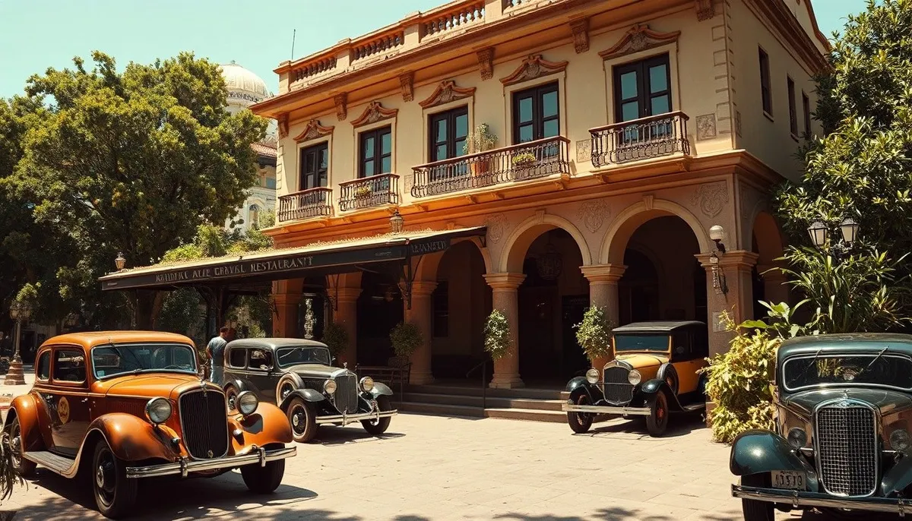

OKpolítico
OKpolíticoÁlvaro Obregón: ascenso militar, presidencia y magnicidio

Álvaro Obregón fue una de las figuras determinantes de la Revolución mexicana y de la reconstrucción institucional del país. Como militar, derrotó a la División del Norte en las batallas de Celaya en 1915; como presidente entre 1920 y 1924, fundó la Secretaría de Educación Pública y negoció el Trata
Compartir por WhatsApp▶ Ver este video en YouTube y suscríbete
El magnicidio en La Bombilla y la crisis sucesoria
El 17 de julio de 1928, en el restaurante La Bombilla de San Ángel, Ciudad de México, el presidente electo Álvaro Obregón fue asesinado con seis disparos de arma de fuego mientras asistía a una comida con legisladores de Guanajuato.
El autor material del ataque directo fue identificado de inmediato como José de León Toral, un dibujante vinculado al movimiento cristero que se aproximó con el pretexto de realizarle un retrato. Este magnicidio ocurrió tras una reforma constitucional aprobada en 1927 que extendió el periodo presidencial a seis años y permitió la reelección no consecutiva en beneficio de Obregón.
✉️ Recibe lo importante del día en tu correo. Suscríbete gratis →El impacto del crimen frenó de golpe el retorno formal de Obregón a la presidencia, cargo que ya había ocupado entre el primero de diciembre de 1920 y el 30 de noviembre de 1924 tras el triunfo militar de la rebelión de Agua Prieta.
Su desaparición física obligó al Congreso a designar a Emilio Portes Gil como presidente interino a partir del primero de diciembre de 1928, marcando el inicio de la etapa histórica conocida como el Maximato bajo la influencia política de Plutarco Elías Calles.
La narrativa oficial del gobierno de Calles determinó que el homicidio fue una acción estrictamente individual ejecutada por el fanatismo de Toral en el marco de la Guerra Cristera. Sin embargo, investigaciones forenses posteriores desataron una prolongada controversia respecto a si intervinieron más tiradores y armas de distinto calibre en el recinto,
tesis que confrontó la versión judicial asentada en la época.
Orígenes en Sonora y la formación del estratega militar
Álvaro Obregón Salido nació el 19 de febrero de 1880 en la Hacienda de Siquisiva, en el municipio de Navojoa, Sonora, siendo hijo de Francisco Obregón Gámez y Cenobia Salido Palomares. Tras quedar huérfano de padre en su primer año de vida, su crianza recayó en sus hermanas mayores, Cenobia, María y Rosa,
mientras realizaba sus primeros estudios en la escuela local dirigida por su hermano José. En su juventud se dedicó a las labores de agricultor y al comercio,
adquiriendo hacia 1903 la propiedad denominada Quinta Chilla en Huatabampo tras afrontar pérdidas económicas derivadas del clima y la escasez de capital. Durante el estallido revolucionario de 1910 convocado por Francisco I.
Madero mediante el Plan de San Luis, Obregón optó por mantenerse al margen de las hostilidades iniciales a pesar de simpatías previas hacia la administración porfirista. Su entrada formal a la vida pública se consolidó en las elecciones municipales de Huatabampo en 1911,
donde resultó electo alcalde por estrecho margen tras apoyarse en alianzas con sectores locales y dirigentes de la tribu yaqui, encabezados por el gobernador indígena conocido como Chito.
Su gestión como autoridad municipal sentó las bases operativas de su posterior influencia en el noroeste del país. En 1912, frente al levantamiento de Pascual Orozco contra la presidencia de Madero,
Obregón organizó y financió con recursos propios a voluntarios que conformaron el Cuarto Batallón de Infantería de Sonora, compuesto por 112 combatientes. Tras contener a las tropas orozquistas en Guaymas,
Hermosillo y Agua Prieta bajo las órdenes del jefe militar Sanguinés y en coordinación con Benjamín Hill, Obregón consolidó ascensos en la estructura castrense estatal y conoció a Plutarco Elías Calles.
Al concluir la campaña en septiembre de 1912, renunció temporalmente al mando para volver al campo.
La campaña constitucionalista y la caída del huertismo
El derrocamiento y posterior homicidio del presidente Francisco I. Madero en febrero de 1913 a manos de Victoriano Huerta precipitó el rechazo de los liderazgos norteños agrupados bajo el Plan de Guadalupe proclamado por Venustiano Carranza.
En Sonora, Ignacio L. Pesqueira designó a Obregón jefe militar de Hermosillo, coordinando fuerzas junto a cuadros como Esteban Baca Calderón, Arnulfo R. Gómez y Manuel M. Diéguez para tomar posiciones estratégicas en Cananea y la aduana fronteriza de Naco.
Carranza designó a Obregón comandante militar de Sonora, Sinaloa, Durango, Chihuahua y Baja California tras encuentros estratégicos en septiembre de 1913. Durante el despliegue del Ejército Constitucionalista en la toma de Topolobampo,
Obregón integró por primera vez en la historia bélica de México el uso de aeronaves para bombardeos de apoyo táctico contra buques y posiciones del ejército federal de Huerta. Con ello aceleró la toma de Culiacán y aseguró la comunicación con el Pacífico.
A lo largo del primer semestre de 1914, las divisiones constitucionalistas avanzaron sobre Mazatlán, Tepic, Colima y Guadalajara tras derrotar a los contingentes leales al régimen en Orendáin. Tras la renuncia de Victoriano Huerta y la intermediación de Francisco Carvajal,
Obregón entró a la Ciudad de México el 14 de agosto de 1914 encabezando a 18 mil soldados, asumiendo temporalmente el control de la capital hasta el arribo de Venustiano Carranza el 20 de agosto.
Ruptura de la Convención y la Batalla de Celaya
Las divergencias internas entre el mando carrancista y la División del Norte provocaron tensiones que derivaron en la Convención de Aguascalientes de octubre de 1914. Pese a los intentos iniciales de Obregón por concertar acuerdos con Francisco Villa —en los que incluso estuvo a punto de ser fusilado por órdenes de este en Chihuahua—,
los convencionistas eligieron a Eulalio Gutiérrez como presidente provisional y desconocieron a Carranza, obligando al gobierno constitucionalista a replegarse y establecerse en el puerto de Veracruz.
En abril de 1915, las fuerzas de Obregón y de Francisco Villa chocaron decisivamente en la Batalla de Celaya, Guanajuato. Utilizando trincheras, ametralladoras y formaciones defensivas de alambre de púas, Obregón contuvo las cargas frontales de caballería villista los días 6 y 13 de abril,
asestando una derrota irreparable a la División del Norte y forzando su retirada hacia el norte del país. El 3 de julio de 1915, durante una inspección en la hacienda de Santa Ana del Conde, Guanajuato, una granada lanzada por combatientes villistas hirió gravemente a Obregón, cercenándole el brazo derecho.
En testimonios recopilados posteriormente por el escritor Vicente Blasco Ibáñez, Obregón refirió haber intentado dispararse a la sien ante el impacto traumático de la amputación con una pistola que se encontraba descargada,
antes de ser auxiliado y reasumir el mando de las operaciones militares del Bajío.
El gabinete de 1917, el Plan de Agua Prieta y el acceso a la Presidencia
Nombrado secretario de Guerra y Marina en marzo de 1916 por Carranza, Obregón participó en las deliberaciones de Querétaro que concluyeron con la promulgación de la Constitución de 1917,
centrando sus aportaciones en la estructuración de las Fuerzas Armadas e impulsando academias militares especializadas. No obstante, el 30 de abril de 1917 dimitió del cargo para reorganizar sus negocios agropecuarios en Sonora y estructurar su plataforma política con miras a los comicios presidenciales de 1920.
En junio de 1919, Obregón formalizó su candidatura desde Nogales, Sonora, respaldado luego por el Partido Laborista Mexicano que encabezaba Luis N. Morones. Carranza, promoviendo una sucesión civil, postuló al diplomático Ignacio Bonillas,
desatando una persecución judicial contra los obregonistas en la XXVIII Legislatura y un proceso judicial en abril de 1920 en la prisión de Santiago Tlatelolco, del cual Obregón escapó disfrazado hacia Guerrero.
En abril de 1920, Plutarco Elías Calles y Adolfo de la Huerta proclamaron el Plan de Agua Prieta para desconocer a Carranza. Durante la huida del mandatario rumbo a Veracruz, Carranza fue asesinado el 21 de mayo de 1920 en un jacal de Tlaxcalantongo, Puebla,
por tropas bajo el mando de Rodolfo Herrero, elemento ligado a los mandos aguaprietistas. Tras el interinato de seis meses de Adolfo de la Huerta, Obregón ganó los comicios de septiembre y asumió la presidencia de la República el primero de diciembre de 1920.
Presidencia, reforma educativa, Bucareli y la rebelión de 1923
Al frente del Ejecutivo federal entre 1920 y 1924, Obregón restableció el ramo educativo al crear en 1921 la Secretaría de Educación Pública encomendada a José Vasconcelos, desplegando campañas de alfabetización,
fundación de escuelas rurales y fomento a muralistas como Diego Rivera y David Alfaro Siqueiros. A la par, el gobierno otorgó tierras y pensiones a jefes rebeldes como Francisco Villa y Saturnino Cedillo a cambio de deponer las armas para lograr la estabilización regional.
En el terreno diplomático y económico, Obregón negoció los Tratados de Bucareli en 1923 para obtener el reconocimiento oficial de Estados Unidos ante el riesgo de nuevas revueltas internas. Este pacto obligó al gobierno mexicano a garantizar que el artículo 27 constitucional,
concerniente a la propiedad originaria de la nación sobre los hidrocarburos y tierras, no se aplicaría de manera retroactiva a las compañías e inversionistas extranjeros instalados previamente.
El señalamiento directo de Plutarco Elías Calles como candidato oficial para el cuatrienio 1924-1928 fracturó la alianza sonorense, provocando a finales de 1923 la rebelión delahuertista encabezada por Adolfo de la Huerta con el respaldo del Partido Liberal.
El movimiento armado fue combatido militarmente por las fuerzas leales a Obregón hasta su neutralización en 1924, provocando el exilio de De la Huerta hacia Panamá y facilitando la llegada de Calles a la presidencia.
Contraste histórico: la versión oficial frente a los expedientes forenses y críticos
El relato emitido por la administración de Plutarco Elías Calles sostuvo formalmente ante los tribunales y la opinión pública que el magnicidio de Obregón fue perpetrado con seis disparos ejecutados en solitario por José de León Toral, motivado por el conflicto religioso derivado de la Guerra Cristera.
Esta conclusión procesal cerró rápidamente el expediente institucional para evitar mayores fracturas entre las facciones militares revolucionarias que disputaban el control del Estado. No obstante, análisis documentales y revisiones de la autopsia contrastaron esta versión. En 1960,
el historiador Antonio Rius Facius redescubrió el examen médico realizado al cadáver de Obregón, en el cual se reportaron orificios y trayectorias causadas por calibres distintos al arma de Toral,
lo que sustentó la participación de tiradores adicionales encubiertos. Estos peritajes médicos salieron a la luz pública en la prensa nacional dos décadas después del atentado, evidenciando inconsistencias en el sumario penal de 1928.
Asimismo, líderes políticos y sectores agrarios señalaron la conveniencia política del magnicidio para el círculo callista, dado que la desaparición de Obregón permitió a Calles consolidar una hegemonía institucional extendida por seis años mediante el Maximato. Por su parte,
la oposición civil y militar cuestionó con dureza el costo democrático de la reelección obregonista, que semanas antes de la tragedia había culminado con la detención y ejecución de los generales disidentes Arnulfo R. Gómez y Francisco R.
Serrano en Huitzilac.
Balance del caudillismo obregonista y su impacto institucional
La figura de Álvaro Obregón condensó la transición del poder ejercido por caudillos emanados de los campos de batalla hacia la creación de instituciones centralizadas que definieron al México posrevolucionario. Sus administraciones sentaron precedentes en materia de reparto agrario regional y desarrollo cultural con la SEP,
al tiempo que subordinaron la autonomía de los estados y silenciaron a facciones rivales dentro del propio ejército. El desenlace violento de su reelección en 1928 evidenció los riesgos de la concentración personalizada del mando militar y obligó a las élites revolucionarias a pactar reglas de alternancia institucionalizada,
dando paso al Partido Nacional Revolucionario en 1929. En la actualidad, el 17 de julio permanece catalogado en la legislación federal sobre lábaros patrios como una fecha solemne en la que la bandera nacional debe izarse a media asta en conmemoración luctuosa de su muerte.
Sigue viendo
Con información de
Wikipedia (es) · Historia Mexicana · Excélsior / Fondo Histórico